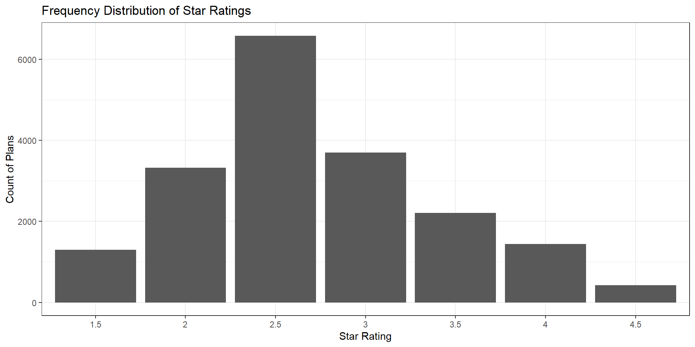
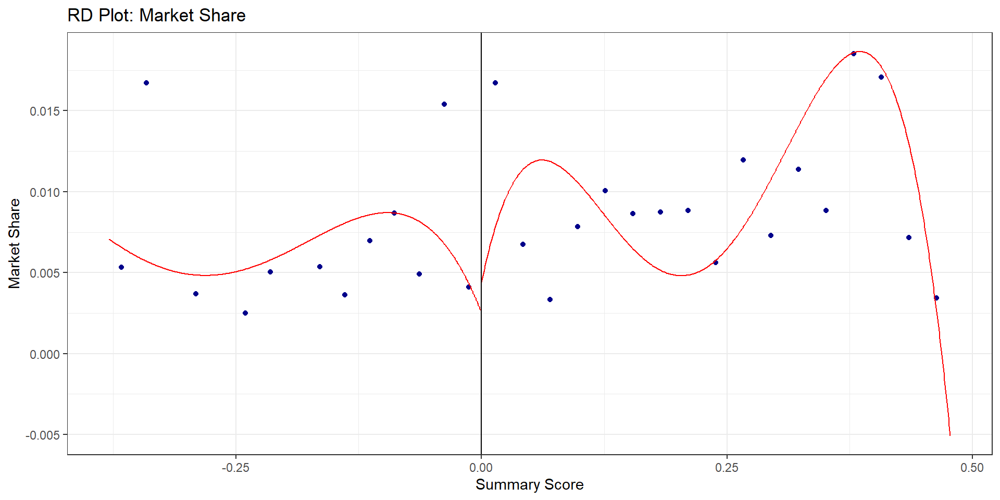
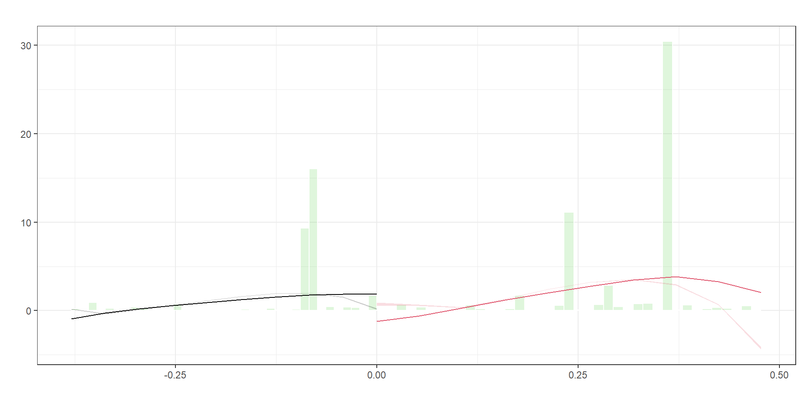
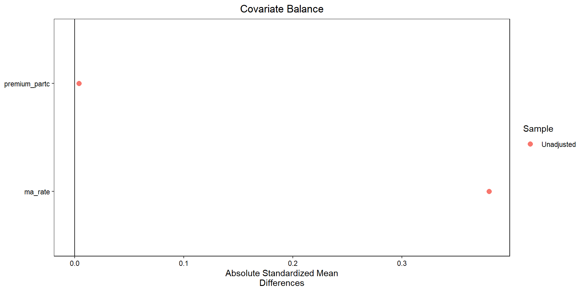

Regression Discontinuity: Part II
Ian McCarthy | Emory University
MA Data
Calculate raw average rating
R Code
ma.data.clean <- ma.data.clean %>%
mutate(raw_rating=rowMeans(
cbind(breastcancer_screen,rectalcancer_screen,cv_cholscreen,diabetes_cholscreen,
glaucoma_test,monitoring,flu_vaccine,pn_vaccine,physical_health,
mental_health,osteo_test,physical_monitor,primaryaccess,
hospital_followup,depression_followup,nodelays,carequickly,
overallrating_care,overallrating_plan,calltime,
doctor_communicate,customer_service,osteo_manage,
diabetes_eye,diabetes_kidney,diabetes_bloodsugar,
diabetes_chol,antidepressant,bloodpressure,ra_manage,
copd_test,betablocker,bladder,falling,appeals_timely,
appeals_review),
na.rm=T)) %>%
select(contractid, planid, fips, avg_enrollment, state, county, raw_rating, partc_score,
avg_eligibles, avg_enrolled, premium_partc, risk_ab, Star_Rating,
bid, avg_ffscost, ma_rate)Distribution of star ratings
Enrollments and star ratings
Call:
lm(formula = avg_enrollment ~ factor(Star_Rating), data = ma.data.clean)
Residuals:
Min 1Q Median 3Q Max
-622 -382 -202 -49 69095
Coefficients:
Estimate Std. Error t value Pr(>|t|)
(Intercept) 71.75 41.77 1.718 0.08589 .
factor(Star_Rating)2 26.17 49.24 0.531 0.59513
factor(Star_Rating)2.5 182.83 45.70 4.001 6.33e-05 ***
factor(Star_Rating)3 422.24 48.54 8.699 < 2e-16 ***
factor(Star_Rating)3.5 449.20 52.61 8.539 < 2e-16 ***
factor(Star_Rating)4 562.33 57.53 9.774 < 2e-16 ***
factor(Star_Rating)4.5 266.88 83.96 3.179 0.00148 **
---
Signif. codes: 0 '***' 0.001 '**' 0.01 '*' 0.05 '.' 0.1 ' ' 1
Residual standard error: 1503 on 18979 degrees of freedom
Multiple R-squared: 0.01415, Adjusted R-squared: 0.01384
F-statistic: 45.41 on 6 and 18979 DF, p-value: < 2.2e-16Problems
- Certainly not the effect of a higher rating…
- Lots of things unobserved, like
- actual quality
- perceived quality
- prices
Effect of 3-star rating
Note about scores
CMS does more than just an average…
- variance across individual metrics
- high variance is punished, low variance rewarded
RD estimates
R Code
ma.rd1 <- ma.rd1 %>%
mutate(score = raw_rating - 2.25,
treat = (score>=0),
window1 = (score>=-.175 & score<=.175),
window2 = (score>=-.125 & score<=.125),
mkt_share = avg_enrollment/avg_eligibles,
ln_share = log(mkt_share),
score_treat=score*treat)
star25.1 <- lm(mkt_share ~ score + treat, data=ma.rd1)
star25.2 <- lm(mkt_share ~ score + treat, data= (ma.rd1 %>% filter(window1==TRUE)))
star25.3 <- lm(mkt_share ~ score + treat + score_treat, data= (ma.rd1 %>% filter(window1==TRUE)))
star25.4 <- lm(mkt_share ~ score + treat + score_treat, data= (ma.rd1 %>% filter(window2==TRUE)))
est1 <- as.numeric(star25.1$coef[3])
est2 <- as.numeric(star25.2$coef[3])
est3 <- as.numeric(star25.3$coef[3])
est4 <- as.numeric(star25.4$coef[3])
rows <- tribble(~term, ~ m1, ~ m2, ~ m3 , ~ m4,
'Bandwidth', "0.25", "0.175", "0.175", "0.125")
attr(rows, 'position') <- 7
modelsummary(list(star25.1, star25.2, star25.3, star25.4),
keep=c("score", "treatTRUE", "score_treat"),
coef_map=c("score"="Raw Score",
"treatTRUE"="Treatment",
"score_treat"="Score x Treat"),
gof_map=c("nobs", "r.squared"),
add_rows=rows)| (1) | (2) | (3) | (4) | |
|---|---|---|---|---|
| Raw Score | 0.040 | −0.044 | −0.059 | −0.074 |
| (0.002) | (0.009) | (0.011) | (0.012) | |
| Treatment | −0.011 | 0.008 | 0.007 | 0.008 |
| (0.001) | (0.002) | (0.002) | (0.002) | |
| Score x Treat | 0.035 | 0.062 | ||
| (0.017) | (0.025) | |||
| Bandwidth | 0.25 | 0.175 | 0.175 | 0.125 |
| Num.Obs. | 9913 | 3385 | 3385 | 3241 |
| R2 | 0.053 | 0.008 | 0.009 | 0.012 |
Interpretation
- OLS on full sample: -1.1% increase in market shares among 2.5-star plans versus 2-star plan
- RD on 0.175 bandwidth: 0.8% increase when imposing constant slopes, 0.7% increase when allowing for differential slopes
- RD on 0.125 bandwidth: 0.8% increase (again allowing for differential slopes)
Built-in RD packages
Estimates from RD package
R Code
Sharp RD estimates using local polynomial regression.
Number of Obs. 9913
BW type Manual
Kernel Uniform
VCE method HC0
Number of Obs. 3327 6586
Eff. Number of Obs. 2974 267
Order est. (p) 1 1
Order bias (q) 2 2
BW est. (h) 0.125 0.125
BW bias (b) 0.125 0.125
rho (h/b) 1.000 1.000
=============================================================================
Method Coef. Std. Err. z P>|z| [ 95% C.I. ]
=============================================================================
Conventional 0.008 0.002 3.268 0.001 [0.003 , 0.012]
Robust - - 5.167 0.000 [0.017 , 0.037]
=============================================================================Optimal bandwidth
R Code
Sharp RD estimates using local polynomial regression.
Number of Obs. 9913
BW type mserd
Kernel Uniform
VCE method HC0
Number of Obs. 3327 6586
Eff. Number of Obs. 307 142
Order est. (p) 1 1
Order bias (q) 2 2
BW est. (h) 0.060 0.060
BW bias (b) 0.124 0.124
rho (h/b) 0.482 0.482
=============================================================================
Method Coef. Std. Err. z P>|z| [ 95% C.I. ]
=============================================================================
Conventional 0.023 0.004 5.462 0.000 [0.015 , 0.032]
Robust - - 4.896 0.000 [0.015 , 0.035]
=============================================================================Estimates for other rating thresholds (2.25)
R Code
ma.rd225 <- ma.data.clean %>%
filter(Star_Rating==2 | Star_Rating==2.5) %>%
mutate(score = raw_rating - 2.25,
treat = (score>=0),
window1 = (score>=-.175 & score<=.175),
window2 = (score>=-.125 & score<=.125),
mkt_share = avg_enrollment/avg_eligibles,
ln_share = log(mkt_share),
score_treat=score*treat)
est225 <- rdrobust(y=ma.rd225$mkt_share, x=ma.rd225$score, c=0,
h=0.125, p=1, kernel="uniform", vce="hc0",
masspoints="off")
summary(est225)Sharp RD estimates using local polynomial regression.
Number of Obs. 9913
BW type Manual
Kernel Uniform
VCE method HC0
Number of Obs. 3327 6586
Eff. Number of Obs. 2974 267
Order est. (p) 1 1
Order bias (q) 2 2
BW est. (h) 0.125 0.125
BW bias (b) 0.125 0.125
rho (h/b) 1.000 1.000
=============================================================================
Method Coef. Std. Err. z P>|z| [ 95% C.I. ]
=============================================================================
Conventional 0.008 0.002 3.268 0.001 [0.003 , 0.012]
Robust - - 5.167 0.000 [0.017 , 0.037]
=============================================================================Estimates for other rating thresholds (2.75)
R Code
ma.rd275 <- ma.data.clean %>%
filter(Star_Rating==2.5 | Star_Rating==3) %>%
mutate(score = raw_rating - 2.75,
treat = (score>=0),
window1 = (score>=-.175 & score<=.175),
window2 = (score>=-.125 & score<=.125),
mkt_share = avg_enrollment/avg_eligibles,
ln_share = log(mkt_share),
score_treat=score*treat)
est275 <- rdrobust(y=ma.rd275$mkt_share, x=ma.rd275$score, c=0,
h=0.125, p=1, kernel="uniform", vce="hc0",
masspoints="off")
summary(est275)Sharp RD estimates using local polynomial regression.
Number of Obs. 10284
BW type Manual
Kernel Uniform
VCE method HC0
Number of Obs. 6586 3698
Eff. Number of Obs. 270 1683
Order est. (p) 1 1
Order bias (q) 2 2
BW est. (h) 0.125 0.125
BW bias (b) 0.125 0.125
rho (h/b) 1.000 1.000
=============================================================================
Method Coef. Std. Err. z P>|z| [ 95% C.I. ]
=============================================================================
Conventional 0.017 0.004 4.277 0.000 [0.009 , 0.025]
Robust - - 2.554 0.011 [0.007 , 0.052]
=============================================================================Estimates for other rating thresholds (3.25)
R Code
ma.rd325 <- ma.data.clean %>%
filter(Star_Rating==3 | Star_Rating==3.5) %>%
mutate(score = raw_rating - 3.25,
treat = (score>=0),
window1 = (score>=-.175 & score<=.175),
window2 = (score>=-.125 & score<=.125),
mkt_share = avg_enrollment/avg_eligibles,
ln_share = log(mkt_share),
score_treat=score*treat)
est325 <- rdrobust(y=ma.rd325$mkt_share, x=ma.rd325$score, c=0,
h=0.125, p=1, kernel="uniform", vce="hc0",
masspoints="off")
summary(est325)Sharp RD estimates using local polynomial regression.
Number of Obs. 5908
BW type Manual
Kernel Uniform
VCE method HC0
Number of Obs. 4123 1785
Eff. Number of Obs. 914 664
Order est. (p) 1 1
Order bias (q) 2 2
BW est. (h) 0.125 0.125
BW bias (b) 0.125 0.125
rho (h/b) 1.000 1.000
=============================================================================
Method Coef. Std. Err. z P>|z| [ 95% C.I. ]
=============================================================================
Conventional 0.013 0.003 3.961 0.000 [0.006 , 0.019]
Robust - - 6.899 0.000 [0.021 , 0.037]
=============================================================================Estimates for other rating thresholds (3.75)
R Code
ma.rd375 <- ma.data.clean %>%
filter(Star_Rating==3.5 | Star_Rating==4) %>%
mutate(score = raw_rating - 3.75,
treat = (score>=0),
window1 = (score>=-.175 & score<=.175),
window2 = (score>=-.125 & score<=.125),
mkt_share = avg_enrollment/avg_eligibles,
ln_share = log(mkt_share),
score_treat=score*treat)
est375 <- rdrobust(y=ma.rd375$mkt_share, x=ma.rd375$score, c=0,
h=0.125, p=1, kernel="uniform", vce="hc0",
masspoints="off")
summary(est375)Sharp RD estimates using local polynomial regression.
Number of Obs. 3654
BW type Manual
Kernel Uniform
VCE method HC0
Number of Obs. 2734 920
Eff. Number of Obs. 646 640
Order est. (p) 1 1
Order bias (q) 2 2
BW est. (h) 0.125 0.125
BW bias (b) 0.125 0.125
rho (h/b) 1.000 1.000
=============================================================================
Method Coef. Std. Err. z P>|z| [ 95% C.I. ]
=============================================================================
Conventional -0.003 0.002 -1.255 0.210 [-0.008 , 0.002]
Robust - - -2.096 0.036 [-0.017 , -0.001]
=============================================================================Manipulation of the running variable

Manipulation of the running variable

$Estl
Call: lpdensity
Sample size 3335
Polynomial order for point estimation (p=) 2
Order of derivative estimated (v=) 1
Polynomial order for confidence interval (q=) 3
Kernel function triangular
Scaling factor 0.3363599677159
Bandwidth method user provided
Use summary(...) to show estimates.
$Estr
Call: lpdensity
Sample size 6586
Polynomial order for point estimation (p=) 2
Order of derivative estimated (v=) 1
Polynomial order for confidence interval (q=) 3
Kernel function triangular
Scaling factor 0.664346246973366
Bandwidth method user provided
Use summary(...) to show estimates.
$EstplotManipulation of the running variable
Manipulation testing using local polynomial density estimation.
Number of obs = 9913
Model = unrestricted
Kernel = triangular
BW method = estimated
VCE method = jackknife
c = 0 Left of c Right of c
Number of obs 3327 6586
Eff. Number of obs 3327 6326
Order est. (p) 2 2
Order bias (q) 3 3
BW est. (h) 0.379 0.379
Method T P > |T|
Robust 5.6664 0
P-values of binomial tests (H0: p=0.5).
Window Length / 2 <c >=c P>|T|
0.028 221 37 0.0000
0.056 307 133 0.0000
0.083 307 154 0.0000
0.111 2968 168 0.0000
0.139 3001 267 0.0000
0.167 3001 280 0.0000
0.194 3026 505 0.0000
0.222 3037 509 0.0000
0.250 3037 1933 0.0000
0.278 3113 1946 0.0000Covariate balance
RD with discrete variables
- Allow for fewer mass points
- Assume random assignment between mass points
- Inference using Fisher’s exact test